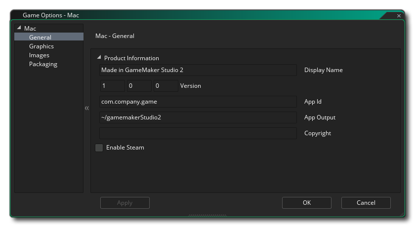

This section outlines the different options available to you that control how your Mac OS game projects will be compiled. The different sections are:

In the Product Information section, the first thing to do is fill in the Display Name of your game then fill in its Version Number, App ID, App Output file and the Copyright details. The App Output is the location to which your game installation files go to on your Mac development machine. When you create your .app.zip, that file can go anywhere (the location you specify when doing the save dialogue is not the only copy made of that .app.zip), but the .pkg and other files are left in this folder, permitting you to test local installations via Terminal in such a way as to simulate Mac Store purchasing, etc...
Here you also need to give the Team Identifier that you wish to use for signing the final application that GameMaker Studio 2 creates for you. Setting it here will overide the Team ID that you have supplied in the macOS Preferences. After the Team Identifier you also have the option to supply the Signing Identifier, which is required by Apple for all non-appstore applications (like Steam games, for example).
The final option is for enabling Steam in your game. If you enable this option, make sure you have the Steamworks SDK installed (see here), and that you have added the Steam app ID into the General Options for the game.

The graphics options are those that you should configure to determine how your game will use the graphics card of your target Mac. The following options are included for you to modify:
- Allow Menu And Dock In Fullscreen: When checked, this option will show the OS menu and dock if the game is in fullscreen mode. This is off by default.
- Display Cursor: When this is checked the regular Mac OS cursor will be show, and un-checking it will mean that no cursor is shown unless you have created one in your game code. This is off by default.
- Start Fullscreen: If this is checked, the game will start in fullscreen mode otherwise it will start windowed. This is off by default.
- Allow Fullscreen Switching: With this ticked the user can switch from fullscreen to windowed and back again using the standard Mac OS shortcuts. This is off by default.
- Interpolate colours between pixels: Turns on interpolation, which basically "smooths" pixels. For crisp pixel graphics, it should be off, but if you have nice alpha blends and smoothed edged graphics it is better left on.This is off by default.
- Use synchronization to avoid tearing: This toggles v-sync on or off (v-sync is used to synchronise your game update speed to the refresh rate of the monitor). Note, that if you have a game with a room speed of 120 and the player has a monitor with a refresh rate of 60, turning this option on will lock your game speed to 60 too. This is off by default.
- Allow window resize: Checking this permits the user to change the size of the game window (the Borderless Window option needs to be off for this to work). This option is off by default.
- Enable Retina: Checking this will set the back buffer to be at the higher (actual) resolution when the game is run on a retina enabled monitor, while un-checking it will set the back buffer to be at the apparent (lower) resolution. What this means is that the initial game window will be set to twice the width and height that the room/view port that the first room is set to. However, this does NOT scale the application surface to suit, and so if you want your game to make the most of the retina display you should also set the application surface to be the same as the window size (note that this will double the pixels along the width and height, so only enable this and scale the application surface if your game will benefit from the increased resolution). This option is off by default.
- Scaling: Here you can choose to maintain aspect ratio (so a 4:3 room will be "letter boxed" on a 16:9) or to scale fully (stretching the image to fit the full screen).
WARNING! Switching off the application surface will disable all the scaling options set in the Mac Game Options until it has been switched back on again. See The Application Surface for further details.Finally there is the option to set the size of the Texture Page. The default (and most compatible) size is 2048x2048, but you can choose from anywhere between 256x256 up to a whopping 8192x8192! There is also a button marked View which will generate the texture pages for this platform and then open a window so that you can see how they look. This can be very useful if you wish to see how the texture pages are structured and to prevent having texture pages larger (or smaller) than necessary.
NOTE: Be aware that the larger the size of the texture page, the less compatible your game will be on Macs with lower specifications.

The images section is where you supply the images that your game requires. For Mac, you need to supply an icon file (that must be in .png format and 1024x1024px) and also a splash screen (which can be .png, .bmp, .jpg or .gif format). The splash screen will be shown while the game loads.

If you wish the finished game to be App Store Ready then you need to check the Build for Mac App Store option, but be aware that this will only function if you are a registered Developer and have the necessary certificates. Under that are the app Permissions which you should only check if they are true as Apple can reject your app if they are checked when they are not needed or vice-versa. These options simply permit your game to use the http_ and url_ functions. It is worth noting that if you wish to support GamePads in your game then the option to create an App Store ready package should be off.
Finally, you need to select its App Category (for more information, see here).
It is worth noting that GameMaker Studio 2 has a Project Image Generator tool which can be used to automatically create all the images required for all the different target platforms your game is being compiled to. If you use this tool, you should revise the images created to ensure that they are what you require.